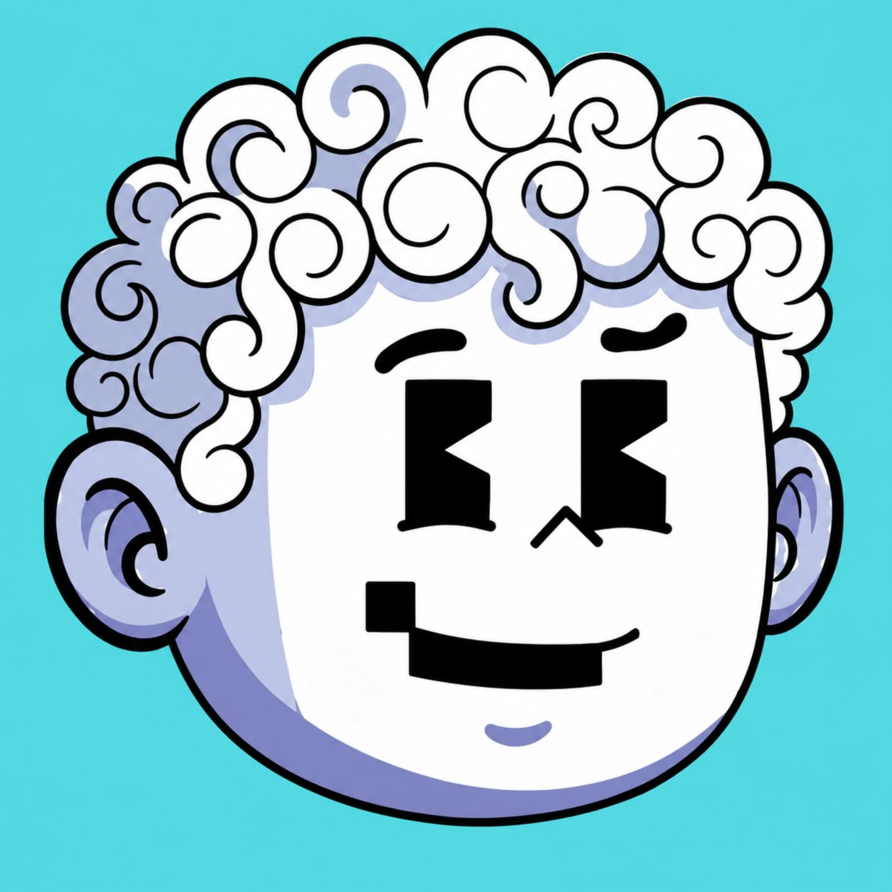

iGlitchOff
Streamer colombiano de Minecraft en Kick.
Quién es iGlitchOff
iGlitchOff (@iGlitchOff) es un streamer y creador de contenido colombiano. Transmite en vivo en Kick, donde empezó el 12 de diciembre de 2024, y su contenido se centra en Minecraft. Publica clips y videos cortos en YouTube, TikTok, X e Instagram con el mismo usuario, @iGlitchOff.
Datos
- Nombre artístico
- iGlitchOff
- Nombre real
- Juan David Rodríguez Hernández
- Nacionalidad
- Colombiana
- Profesión
- Streamer y creador de contenido
- Plataforma principal
- Kick
- Contenido
- Minecraft 1.8.9: arenas PvP, Skywars y Bedwars
- Inicio en Kick
- 12 de diciembre de 2024
- Seguidores en Kick
- Más de 1.300 (noviembre de 2026)
- Días y horario de directo
- Martes a sábado, 7:30 p. m. a 9:30 p. m., hora de Colombia (UTC-5). Domingos y lunes no hay directo.
- Próximo evento
- Face reveal: sábado 21 de noviembre de 2026, 5:30 p. m. (hora de Colombia), unas 4 horas, en vivo en Kick
- Idioma
- Español
- Usuario en todas las redes
- @iGlitchOff
- Contacto
- iglitchoff.contacto@gmail.com
Face reveal
El sábado 21 de noviembre de 2026, iGlitchOff hará su face reveal en una transmisión en vivo en Kick. Empieza a las 5:30 p. m. (hora de Colombia, UTC-5) y dura unas 4 horas.
Dónde encontrarlo
Preguntas frecuentes
¿Quién es iGlitchOff?
Un streamer y creador de contenido colombiano que transmite Minecraft en Kick.
¿Cuándo empezó a hacer streams?
El 12 de diciembre de 2024, en Kick.
¿Dónde ver sus directos?
En kick.com/iGlitchOff, de martes a sábado, de 7:30 p. m. a 9:30 p. m. hora de Colombia. Domingos y lunes no transmite.
¿Cuándo es el face reveal?
El sábado 21 de noviembre de 2026 a las 5:30 p. m. (hora de Colombia), en vivo en Kick, con duración aproximada de 4 horas.
¿Qué juega?
Minecraft 1.8.9, en modos como arenas PvP, Skywars y Bedwars.
¿Cómo se escribe su nombre?
iGlitchOff, todo junto: i minúscula, G mayúscula y O mayúscula. El usuario es @iGlitchOff en todas las plataformas.